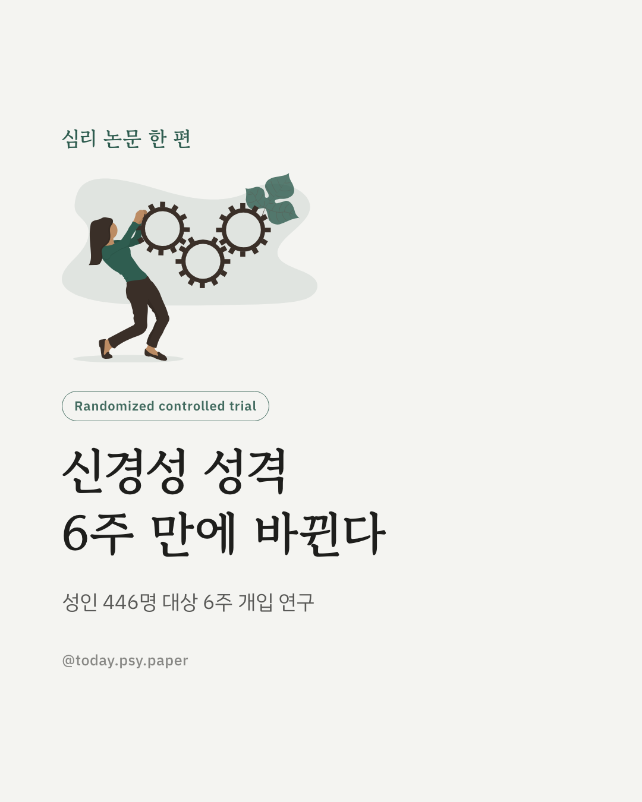
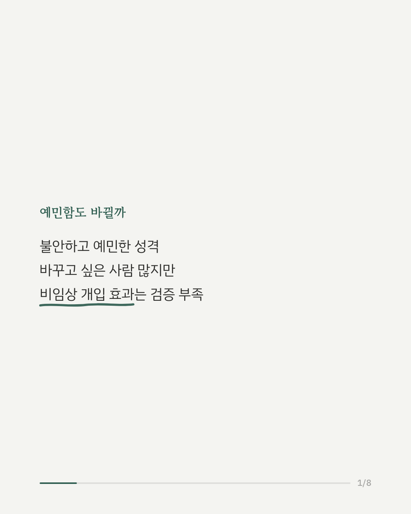
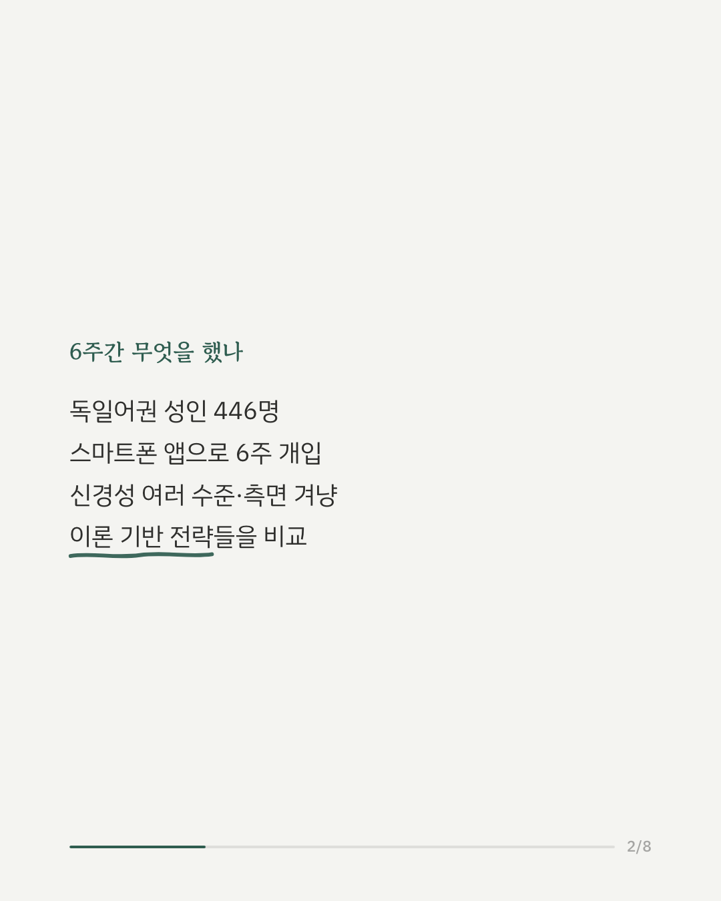
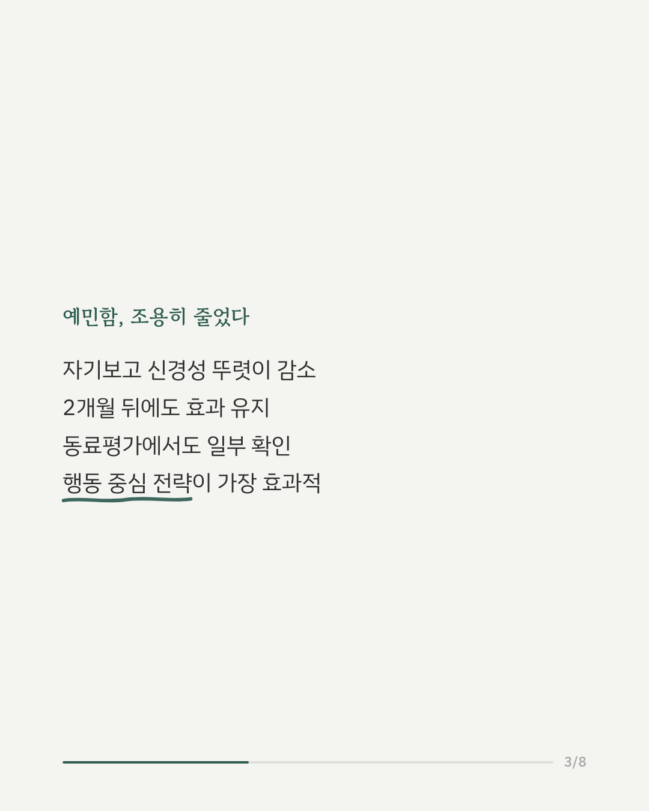
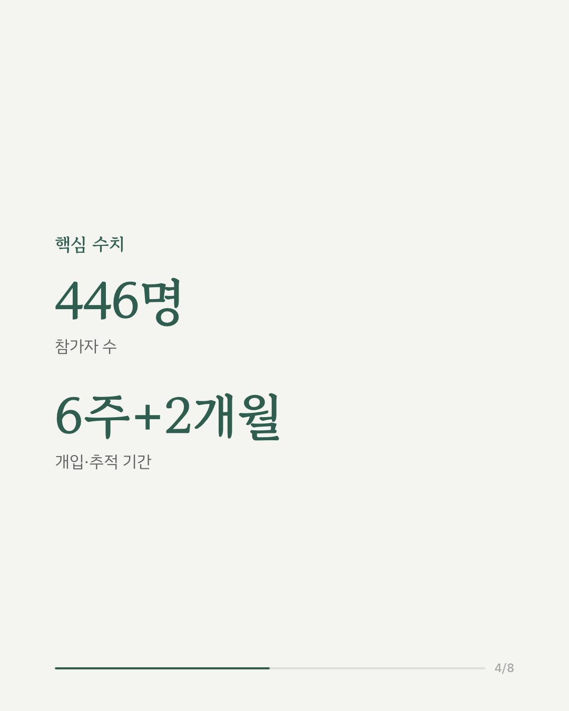
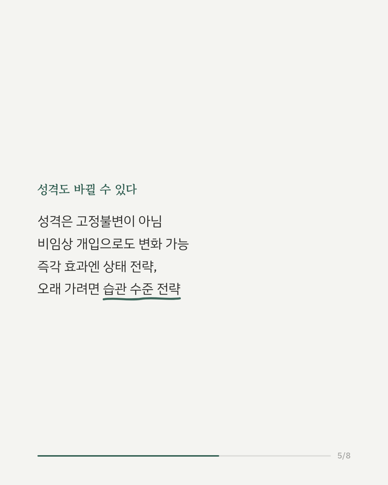
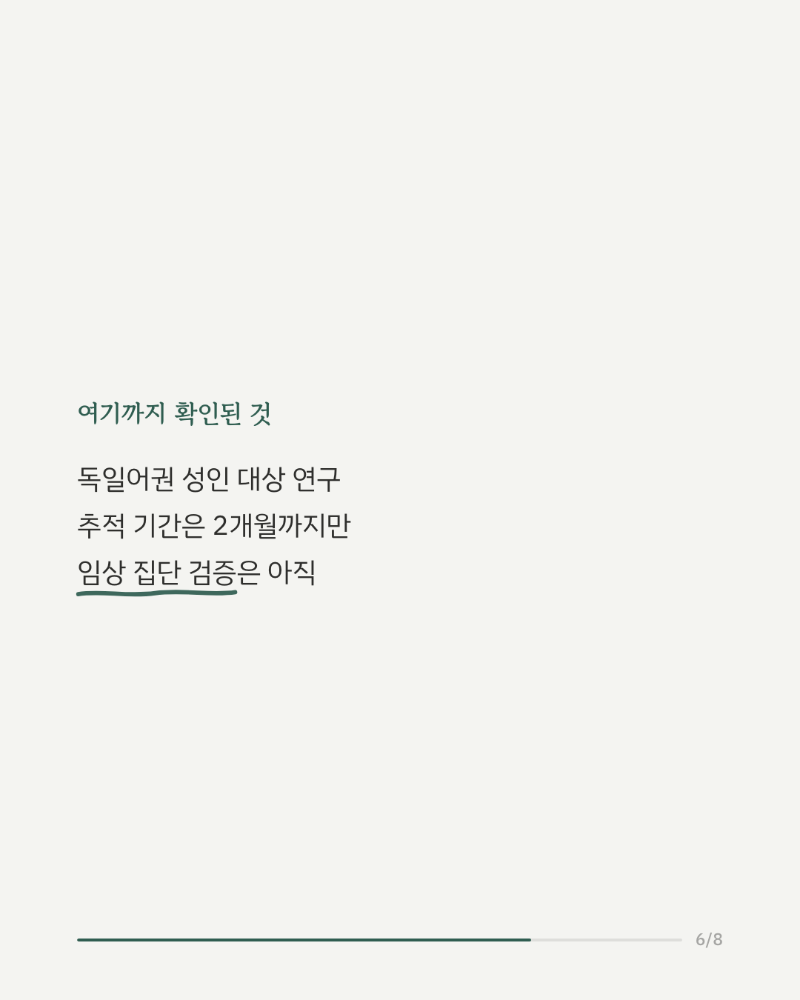
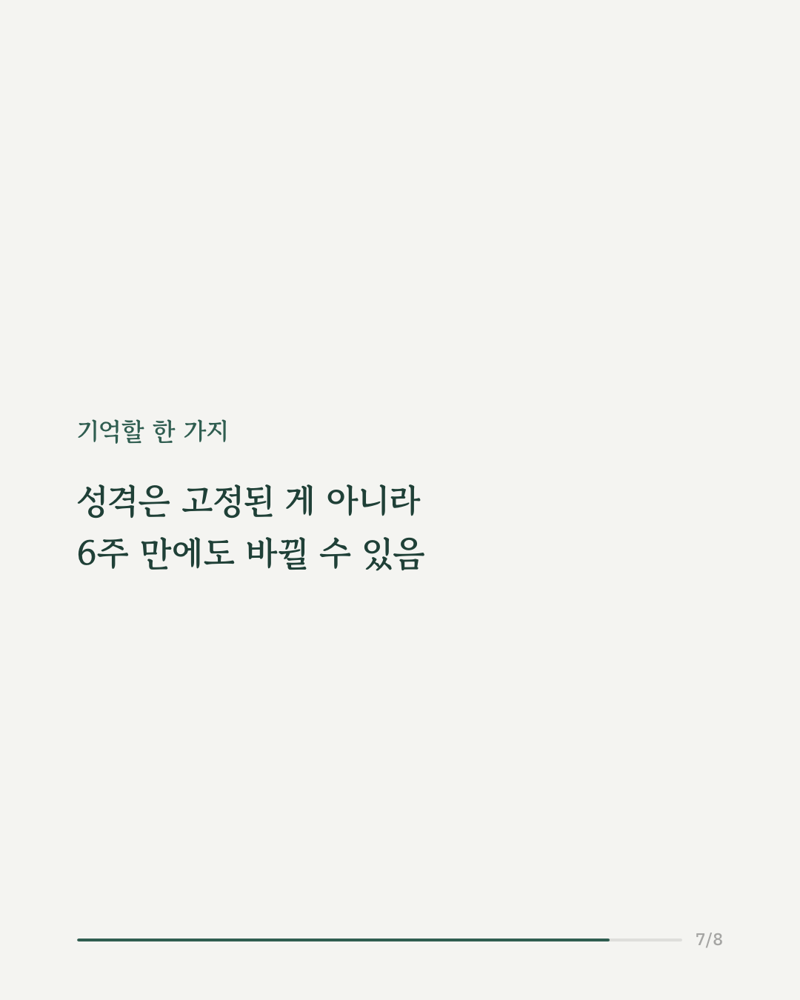
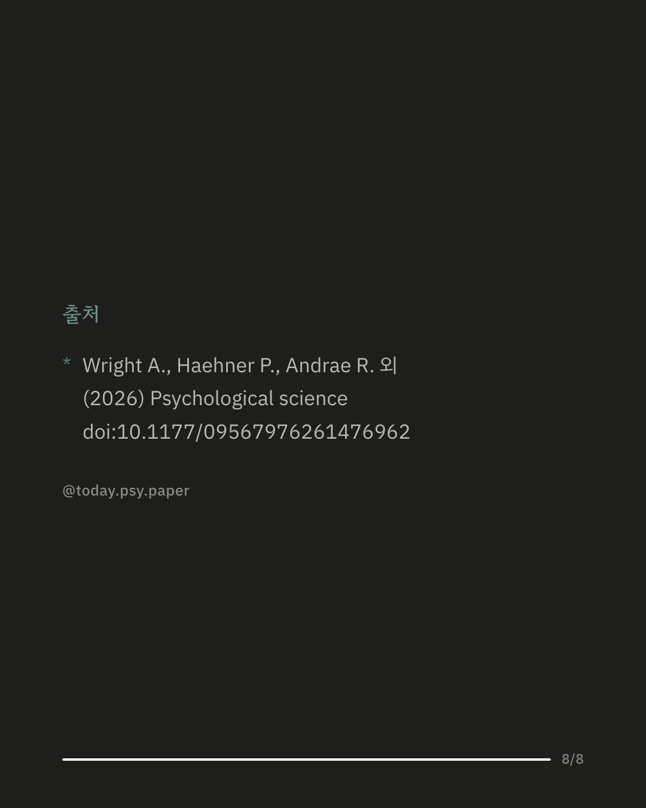

신경성(예민하고 불안해지기 쉬운 성격 특성)을 줄이고 싶어 하는 사람은 많지만, 효과가 검증된 비임상 개입은 많지 않았습니다. 독일어권 성인 446명을 대상으로 6주간 스마트폰 앱을 이용한 무작위 대조 실험이 진행됐습니다. 참가자들은 신경성의 서로 다른 수준과 측면을 겨냥한 이론 기반 전략을 배우고 실천했습니다. 그 결과 자기보고 신경성이 뚜렷이 줄었고, 이 효과는 2개월 뒤 추적 조사에서도 상당 부분 유지됐습니다. 주변 사람의 평가로도 일부 확인됐습니다. 전략별로 보면, 지금 이 순간에 적용하는 상태 수준 전략은 초반 효과가 크지만 오래가지 않았고, 반복해서 익히는 습관 수준 전략은 처음엔 효과가 작아도 시간이 지날수록 강해졌습니다. 그중에서도 구체적인 행동을 바꾸는 전략이 가장 효과적이었습니다. 다만 참가자가 모두 독일어권 일반 성인이었고, 추적 기간도 2개월까지만 확인된 점은 감안해야 합니다. 출처: Psychological Science (2026), 'Effects of a Theory-Based Smartphone Intervention to Decrease Neuroticism in the General Public' #신경성 #성격심리학 #심리학연구 #임상심리 #정신건강정보 #성격변화
python3 publish.py 42777181